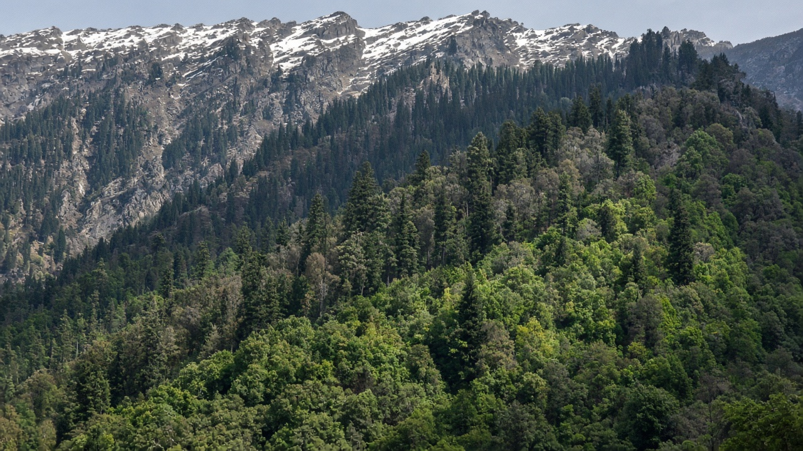
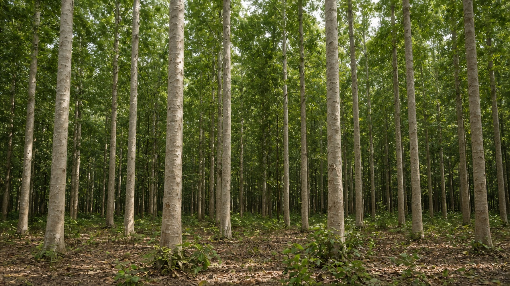
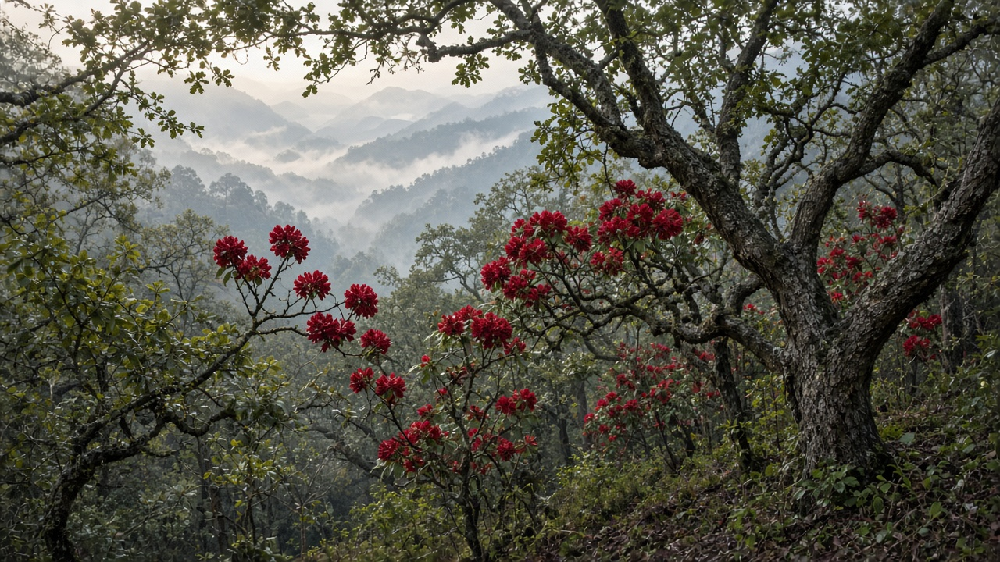

Forests of Nepal and Himalayan Ecosystems
Published on August 20, 2026

Nepal’s forests stack in elevation belts from tarai sal and riverine woodland through Siwalik and mid-hill sal, chir pine, and oak–rhododendron, to high fir, hemlock, birch, and alpine scrub below snow. A few tens of kilometers of horizontal distance can cross tropical, subtropical, temperate, and alpine climates, so species, soils, and fire regimes change faster than in most countries. The Himalayan arc also creates rain-shadow inner valleys where juniper and dry steppe replace moist oak. Monsoon rain, winter drought, and steep slopes couple forest cover tightly to landslides, springs, and irrigation for terraces below. National forest cover recovered in many mid-hills after community forestry, while tarai and some high-value sal belts remain under conversion and offtake pressure. Reading Nepal as a vertical mosaic of Himalayan ecosystems is more useful than a single national percentage of green.
Stand types carry distinct uses and risks. Sal coppice and tarai production forests supply timber and fuel but need regeneration protection from grazing and fire. Chir pine on dry south faces burns readily and was widely planted; mixed oak–rhododendron on cooler slopes holds soil and leaf litter that households still collect. High fir and birch belts grow slowly, store carbon in cold soils, and suffer when trails, livestock, and fuel collection concentrate near settlements and trekking routes. Inner Himalayan dry forests and alpine pastures are easily overgrazed and should not be treated as failed rainforest. Inventories that name ecological zone, aspect, and management regime—community, collaborative, leasehold, government—match tools to the belt rather than applying one silvicultural recipe from tarai to treeline.
Stewardship of Nepal’s Himalayan forests therefore combines community user groups in the hills, stronger control of conversion in the tarai, and careful limits in slow-growing high forests and trans-Himalayan drylands. Corridor continuity along rivers and ridges keeps elevation migration possible as climate belts shift upslope. Restoration should prefer native mixes of the local belt, aftercare through dry winters, and soil cover on steep fields rather than ceremonial planting of poorly matched stock. Teaching students the names of belts—sal, chir, oak–rhododendron, fir–birch, alpine kharka—turns a textbook map into daily land literacy. Himalayan forest policy that respects this stacked ecology protects water, wood, and carbon together, because in Nepal those services are produced on the same slopes that people farm, graze, and walk every day.

नेपालका वन तराई साल र नदीकिनार वुडल्यान्डबाट चुरे तथा मध्य पहाडी साल, चिर सल्ला र ओक–गुराँस हुँदै हिउँमुनि उच्च धुपी, हेमलक, भुर्ज र अल्पाइन झाडीसम्म उचाइ पट्टीमा थुप्रिन्छन्। केही दसकिलोमिटर तेर्सो दूरीले उष्ण, उपोष्ण, समशीतोष्ण र अल्पाइन जलवायु काट्न सक्छ, त्यसैले प्रजाति, माटो र आगो व्यवस्था धेरैजसो देशभन्दा चाँडै फेरिन्छन्। हिमाली चापले वर्षा-छाया भित्री उपत्यका पनि बनाउँछ जहाँ धुपी र सुख्खा स्टेप आर्द्र ओकलाई बदल्छन्। मनसुन वर्षा, जाडो खडेरी र भिरालो भिरले वन आवरणलाई पहिरो, मुहान र तल्ला गराको सिँचाइसँग कडा जोड्छन्। सामुदायिक वनपछि धेरै मध्य पहाडमा राष्ट्रिय वन आवरण फर्कियो, जबकि तराई र केही उच्च मूल्य साल पट्टी रूपान्तरण र निकालाइ दबाबमा रहन्छन्। नेपाललाई हरियोको एउटै राष्ट्रिय प्रतिशतभन्दा हिमाली प्रणालीको ठाडो मोज़ेक पढ्नु उपयोगी छ।
स्ट्यान्ड प्रकारले फरक प्रयोग र जोखिम बोक्छन्। साल कोपिस र तराई उत्पादन वनले काठ र इन्धन दिन्छन् तर चराइ र आगोबाट पुनरुत्पादन सुरक्षा चाहिन्छ। सुख्खा दक्षिण मोहडाका चिर सल्ला सजिलै जल्छन् र व्यापक रोपिए; चिसो भिरका मिश्रित ओक–गुराँसले माटो र घरधुरी अझै संकलन गर्ने पात कूडा राख्छन्। उच्च धुपी र भुर्ज पट्टी बिस्तारै बढ्छन्, चिसो माटोमा कार्बन राख्छन् र गोरेटो, पशु र इन्धन संकलन बस्ती तथा पदयात्रा मार्ग नजिक केन्द्रित हुँदा पीडित हुन्छन्। भित्री हिमाली सुख्खा वन र अल्पाइन खर्क सजिलै अति चरिएका हुन्छन् र असफल वर्षावन मानिनु हुँदैन। पारिस्थितिक क्षेत्र, मोहडा र व्यवस्थापन व्यवस्था—सामुदायिक, सहकार्य, कबलियती, सरकारी—नाम दिने सूचीले तराईदेखि रूखरेखासम्म एउटै वनविज्ञान नुस्खा लागू नगरी पट्टीसँग औजार मिलाउँछ।
नेपालका हिमाली वन हेरचाह त्यसैले पहाडमा सामुदायिक उपभोक्ता समूह, तराईमा रूपान्तरणको बलियो नियन्त्रण, र सुस्त वृद्धि उच्च वन तथा ट्रान्स-हिमाली सुख्खा भूमिमा सावधानीपूर्ण सीमा जोड्छ। नदी र रिजसाथ करिडोर निरन्तरताले जलवायु पट्टी माथि सर्दा उचाइ बसाइँ सम्भव राख्छ। पुनर्स्थापनाले समारोहमा बेमेल स्टक रोप्नुभन्दा स्थानीय पट्टीका मूल मिश्रण, सुख्खा जाडोभरि पछिको हेरचाह र भिरालो खेतमा माटो आवरण प्राथमिकता दिनुपर्छ। विद्यार्थीलाई पट्टीका नाम—साल, चिर, ओक–गुराँस, धुपी–भुर्ज, अल्पाइन खर्क—सिकाउँदा पाठ्यपुस्तक नक्सा दैनिक भूमि साक्षरता बन्छ। यो थुप्रिएको पारिस्थितिकी सम्मान गर्ने हिमाली वन नीतिले पानी, काठ र कार्बन सँगै जोगाउँछ, किनभने नेपालमा ती सेवा मानिसले हरेक दिन खेती गर्ने, चराउने र हिँड्ने त्यही भिरमा उत्पादन हुन्छन्।

नेपाल के वन तराई साल और नदी किनारे वुडलैंड से शिवालिक तथा मध्य पहाड़ी साल, चीड़ और ओक–बुराँस होते हुए हिम के नीचे उच्च देवदार, हेमलॉक, भुर्ज और अल्पाइन झाड़ी तक ऊँचाई पट्टियों में थुपे हैं। कुछ दस किलोमीटर क्षैतिज दूरी उष्ण, उपोष्ण, समशीतोष्ण और अल्पाइन जलवायु काट सकती है, इसलिए प्रजाति, मिट्टी और आग व्यवस्था अधिकांश देशों से तेज़ी से बदलती हैं। हिमालय चाप वर्षा-छाया भीतरी घाटियाँ भी बनाता है जहाँ देवदार और शुष्क स्टेप आर्द्र ओक को बदलते हैं। मानसून वर्षा, शीतकालीन सूखा और खड़ी ढलान वन आवरण को भूस्खलन, झरनों और नीचे छत सिंचाई से कसकर जोड़ते हैं। सामुदायिक वन के बाद कई मध्य पहाड़ियों में राष्ट्रीय वन आवरण लौटा, जबकि तराई और कुछ उच्च मूल्य साल पट्टियाँ रूपांतरण और निकासी दबाव में रहती हैं। नेपाल को हरित के एक राष्ट्रीय प्रतिशत से अधिक हिमालयी तंत्रों के ऊर्ध्व मोज़ेक के रूप में पढ़ना उपयोगी है।
स्टैंड प्रकार भिन्न उपयोग और जोखिम रखते हैं। साल कॉपिस और तराई उत्पादन वन काष्ठ और ईंधन देते हैं पर चरान और आग से पुनरुत्पादन सुरक्षा चाहिए। शुष्क दक्षिण मुख के चीड़ आसानी से जलते हैं और व्यापक रोपे गए; ठंडी ढलानों के मिश्रित ओक–बुराँस मिट्टी और घरों द्वारा अभी संग्रहित पत्ती कूड़ा रखते हैं। उच्च देवदार और भुर्ज पट्टियाँ धीरे बढ़ती हैं, ठंडी मिट्टी में कार्बन रखती हैं और पगडंडी, पशु और ईंधन संग्रह बस्तियों तथा पदयात्रा मार्गों के पास केंद्रित होने पर पीड़ित होती हैं। भीतरी हिमालयी शुष्क वन और अल्पाइन चरागाह आसानी से अति चराए जाते हैं और असफल वर्षावन नहीं माने जाने चाहिए। पारिस्थितिक क्षेत्र, मुख और प्रबंधन व्यवस्था—सामुदायिक, सहयोगी, पट्टेदारी, सरकारी—नाम देने वाली सूची तराई से वृक्ष रेखा तक एक वनविज्ञान नुस्खा लागू किए बिना पट्टी से औजार मिलाती है।
नेपाल के हिमालयी वनों का प्रबंधन इसलिए पहाड़ियों में सामुदायिक उपभोक्ता समूह, तराई में रूपांतरण का अधिक नियंत्रण, और धीमी वृद्धि उच्च वनों तथा ट्रांस-हिमालय शुष्क भूमि में सावधानीपूर्ण सीमाएँ जोड़ता है। नदियों और रिज के साथ गलियारा निरंतरता जलवायु पट्टियाँ ऊपर सरकने पर ऊँचाई प्रवास संभव रखती है। पुनर्स्थापना समारोह में बेमेल स्टॉक रोपने से अधिक स्थानीय पट्टी के मूल मिश्रण, शुष्क सर्दी भर बाद की देखभाल और खड़ी खेतों पर मिट्टी आवरण को प्राथमिकता दे। छात्रों को पट्टियों के नाम—साल, चीड़, ओक–बुराँस, देवदार–भुर्ज, अल्पाइन खरक—सिखाने पर पाठ्यपुस्तक नक्शा दैनिक भूमि साक्षरता बन जाता है। इस थुपी पारिस्थितिकी का सम्मान करने वाली हिमालयी वन नीति जल, काष्ठ और कार्बन साथ बचाती है, क्योंकि नेपाल में वे सेवाएँ उन्हीं ढलानों पर बनती हैं जिन पर लोग हर दिन खेती, चरान और चलते हैं।